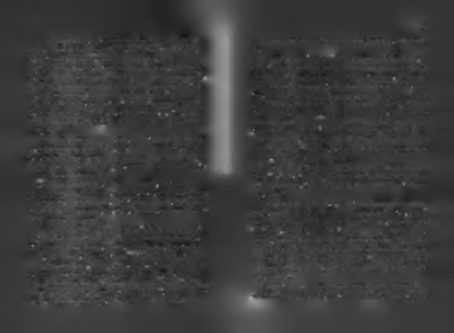

Kolay ulaşılan değersiz olur: "İlk denememde olsaymen MS'nin diğer kitaplarım okumam lazım. Akıl açadı, belki daha fazla sevinirdim ama sevincim kısa sücağım benim!"
rerdi. Birden çok denemeyle ulaştığım şey, bmim için da
10. Geleceğe dön yüzünü: "Artık önümüzdeki maçlara bakaha kıymetli olur. Kolay ele gelen, elden kolay gider.
cağız! Geleceğim hâlâ yerinde duruyor ve hayatımın
Ulaşılan başarının değeri, uğruna aşılan zorluklar kakalan kısmını orada geçireceğim. Bu iş olmadı ama hisdardır."
sediyorum gelecekte bir gün bir şekilde dikkate değer
Yeni bir yol yasası: "Başarısız olan ben değildim, kullandı
bir iş başaracağım! Daha oynanmadı son el!"
ğım yoldu. Demek ki aynı amaca farklı bir yoldan gitme
Karşılaştığınız başarısızlıkları yorumlama şekliniz çok
liyim. Başarısızlığa çıkan bütün yollan bitirdiğimde, do
önemlidir çünkü başarısızlığın üzerinizdeki etkisinin derinli
ğal olarak başanya giden yolu bulacağım! Biraz daha
ğini ve kalıcılığını bu yorumlarınız belirler. Başarısızlığın
zaman, biraz daha çaba, biraz daha cesaret yeter."
üzerinizdeki yükünü hafifletecek yorum şekilleri bunlarla sı
Yüklenme yasası: " Tüm gücümle yüklenmedim, ondan ol
nırlı değil, kendiniz yeni yollar da bulabilirsiniz.
madı. Şimdi "topladım kalbimin dağılan her köşesini" ve he
Başarısızlık kötü bir durumdur ama başa çıkılamaz değil
defe kilitlendim. Beş tavşanı aynı anda kovalarsam, az-
dir. Başarısızlıkla başa çıkmak için kullanılacak en kötü yol söylen
metsem de hiçbirini yakalayamadığımı öğrendim. He
mektir! İnsan yaşayacağı geçici başarısızlıklardan, başarısızlıdefimi seçtim, alternatiflerden vazgeçtim, tüm gücüm
ğın gücünün neye yetmeyeceğini öğrenmelidir. Başarısızlıle yükleniyorum! El feneri gibi değilim, mercek gibi ğın gücü insanları geciktirebilir ama durduramaz. Yorar ama
yakıcıyım artık!"
yıkamaz. Yeni yollara yönlendirir ama yolunuzu kapatamaz.
Kendini büyütme yasası: "Önümdeki engel benden
Son-uç'a gitmek ya da gitmemek, başarısızlığa değil, size
büyüktü aşamadım ama ben de kendimi büyütebilir,
bağlıdır.
kendimi daha çok geliştirebilir, o engeli aşabilirim. Engeller kendi kendilerini büyütemezler. Daha büyük olup tek
B a ş a r ı gem isini y ü zd ü re n p e r v a n e le r : B aş ın ıza gelen h e r şeyi içinizde rar saldıracağım!"
bir b a ş a rı k a ta lizü rü ya p a b ilirs in iz!
Yeni akıl yasası: "Başarısızlık bir puzzle'da parçaları yanlış yere yerleştirmektir. İlk denemedeki sonuç olumsuz
Şimdi size hayatın karşınıza çıkardığı kötü şeyleri karşılasa, yapılması gereken en başa dönüp yeni bir mantıkla mak için kullanabileceğiniz "nükleer başlıklı" başarı taktikleparçaları yeniden düzenlemektir. Mevcut aklım beni rimden biri olan, pervaneye sarmak metodumu anlatmak istiyoburaya getirdi, aklımı yeniden yapılandırarak, yeni rum!
yollar görebilirim. Kapalı olan yolum değil, aklım! He-

1 0 0